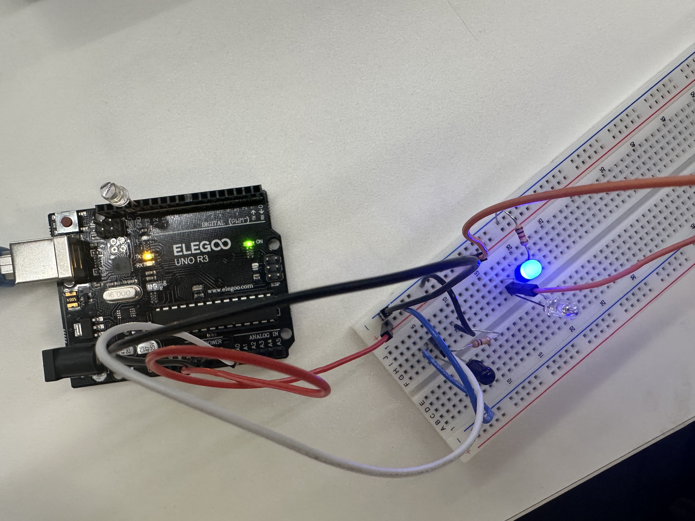
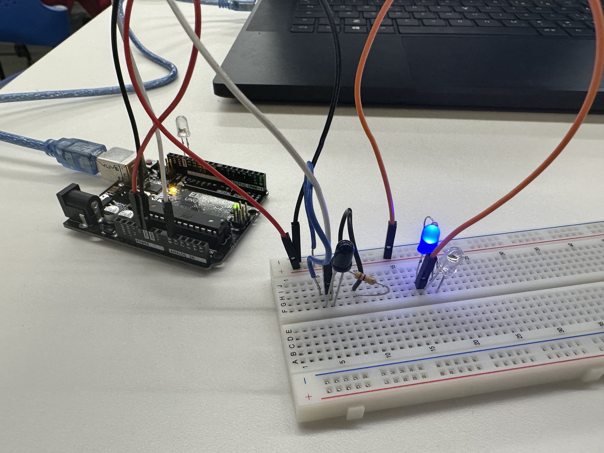

<div class="textcontainer">
<p class="margin"> </p>
<h3>Week 6: Electronic Inputs</h3>
<!--
<p class="margin"> </p>
<div class="flexrow">
<a id="btn" href="wk6.zip" download>Checkout my files from this week!
</a>
</div>
<p class="margin"> </p>
-->
<h4>Assignment: Build a Sensor</h4>
<p class="margin"> </p>
<p>
For this sensor, I decided to create an IR phototransistor because I intend to use infrared sensors as an input for my final project, a Strandbeest. This week's module is by and large the biggest learning jump for me technically relative to the prior week's topics, so I needed to spend extra time reading about capacitor physics, phototransistors and circuits to understand conceptually how the circuit works with a sensor.
</p>
<p>
I initially struggled to set up the sensor because I had to work with phototransistors which appear similar in appearance to LEDs when building the schematic in the breadboard. I began by building the circuit through the schematic present on the webpage <a href="https://nathanmelenbrink.github.io/lab/input/IR/index.html"> (Class Diagram on IR Sensors) </a> and had to change several of the photo transistors of the LED in order to correctly place the phototransistor and LED to be responsive to one another. I then wrote a pretty simple Arduino program to read the values of the phototransistor. You can see the schematic below:
</p>
<div class="flexrow">


</div>
<p class="margin"> </p>
<p class="margin"> </p>
<p class="margin"> </p>
<iframe width="315" height="560"
src="https://www.youtube.com/embed/fESyFvkLOEE"
title="YouTube video player"
frameborder="0"
allow="accelerometer; autoplay; clipboard-write; encrypted-media; gyroscope; picture-in-picture; web-share"
allowfullscreen></iframe>
<p class="margin"> </p>
</div>